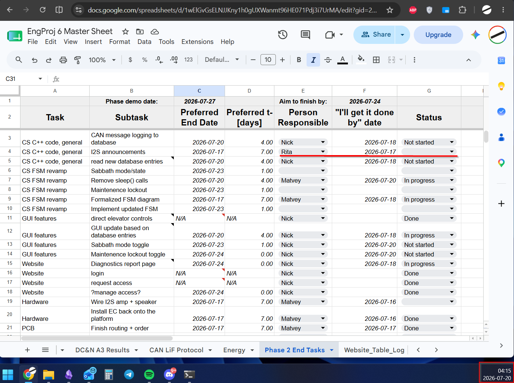

Team Contribution Tracking
Rita has not been contributing sufficiently to the project.

The table was created on 2026-07-16 and shared with the following message:
Based on the professor's latest announcement, I made a summary of the tasks that we need to complete by the end of the phase (2026-07-27). Ideally, we would complete everything by Friday before the demonstration so that we have time to test and record demonstrations. If we finish everything by Friday, 2026-07-24, we will be able to polish the project and potentially perform a live demonstration.
This is the “Phase 2 End Tasks” sheet. Feel free to assign yourself any tasks that you want to complete; just add the date by which you think you will finish them in column F.
I added a preferred completion date because some tasks depend on others.
Also, keep in mind that these are only functionality-based tasks. We still need to leave time for documentation and website/logbook maintenance.
Rita reacted to the message with a thumbs-up, but she still has not assigned herself any new tasks. She completed only an initial prototype of the I2S code for the Raspberry Pi and has yet to integrate it into the main Raspberry Pi Supervisory Controller code. After I explicitly asked her on Friday to commit the demonstration code to GitHub, she did not do so. Only logbook entries describing the code are currently available.